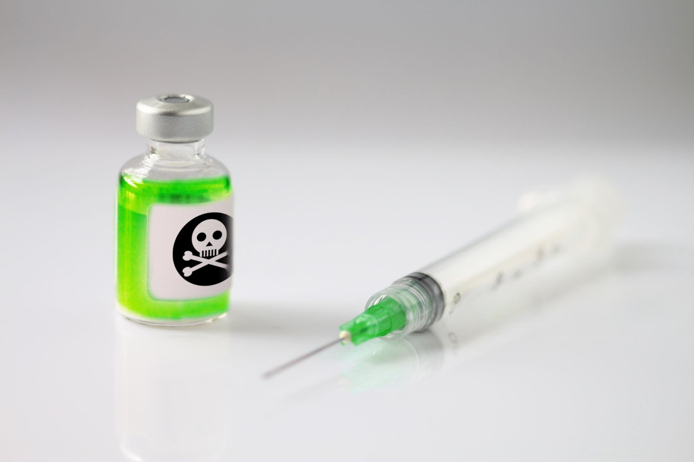
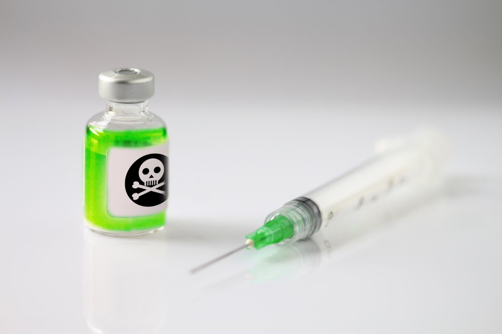

O que é o projeto "Reduzir substancialmente o número de mortes e doenças por produtos químicos perigosos" ? O projeto tem como objetivo informar e ajudar todos sobre produtos quimicos perigosos, um topico muito importante presente no "Os Objetivos de Desenvolvimento Sustentável (ODS)".